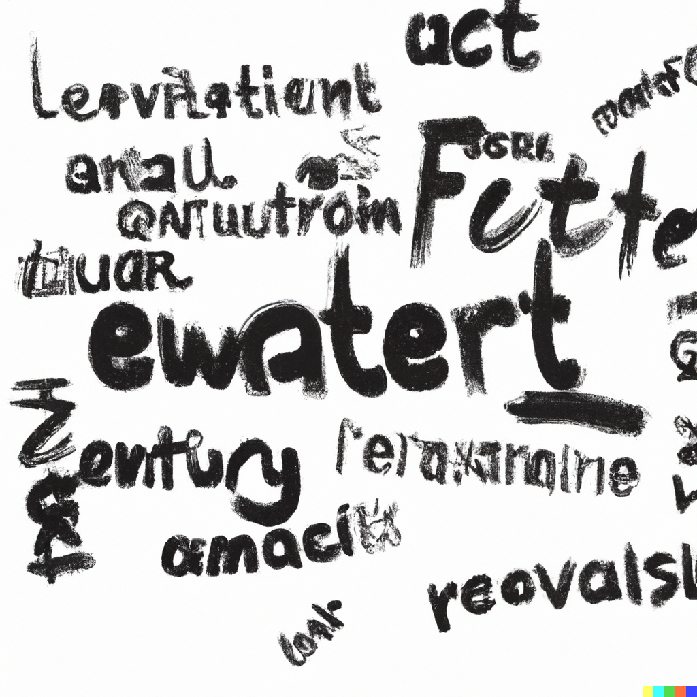

AI Generated Page
This image was created by OpenAI's
DALL.E Model using a prompt based off of the key points of this very assignment.
While a bit chaotic, it demonstrates the ever improving capabilities of AI.
Who knows, eventually I may be able to do the same prompt and produce entirely comprehensible text.
